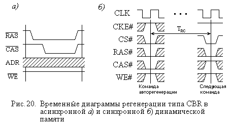

2.3.4. Регенерация информации в динамических ЗУ
Независимо от того, какова конкретная модификация динамической памяти, запоминающие конденсаторы ее запоминающих элементов разряжаются из-за наличия токов утечки. Постоянная разряда, как известно, зависит от емкости запоминающего конденсатора и сопротивления цепи тока утечки и может различаться для разных модификаций. Время, в течение которого информация сохраняется в элементе памяти, составляет до нескольких десятков миллисекунд.
Это приводит к необходимости периодического (с периодом не больше, чем время сохранения информации) восстановления зарядов емкостей. Такая процедура и получила название регенерации (refresh) динамической памяти. Выполняется она одновременно для целой строки матрицы (банка) элементов памяти, поскольку регенерировать информацию по элементам или по словам (по 8 байт) слишком долго.
Действительно, если даже считать, что регенерация выполняется одним длинным пакетным циклом, то для микросхем памяти PС2700, в которых на одну передачу данных приходится 3 нс (165 МГц × 2), при емкости 256 Мбит на поэлементную регенерацию всех элементов потребуется 3 × 10-9 × 228 = 0,8 с, а на регенерацию по словам, точнее, ячейкам, разрядность которых не может быть выше разрядности микросхемы (как правило, не более 16 бит), потребуется в 16 раз меньше времени, т.е. 50 мс. Учитывая, что для таких микросхем максимальный период регенерации TREF = 64 мс, поэлементная регенерация оказывается принципиально невозможной, а регенерация по словам будет занимать более 75 % времени работы памяти.
Количество же строк в одном банке в данной микросхеме составит 8192, а построчная регенерация в таком случае будет занимать всего 24,5 мкс или около 0,5 % времени.
Конечно, если ко всем строкам памяти за время, не превышающее TREF, были бы выполнены обращения, то обновлять информацию не было бы нужно, так как при обращении (не только записи, но и чтении) заряд на запоминающих емкостях полностью восстанавливается.
Распределить циклы регенерации строк по полному периоду регенерации можно различными способами. Рассмотренный выше вариант пакетной регенерации, при котором все циклы регенерации строк группируются в начале или в конце периода, хотя и может быть более экономичным по времени из-за отсутствия дополнительных переключений, не является достаточно удобным, так как блокирует работу памяти на относительно длительный интервал времени. Поэтому чаще применяют так называемую распределенную регенерацию (иногда используется термин “синхронная”), при которой циклы регенерации строк равномерно распределяются по периоду.
Длительность периода регенерации не обязательно устанавливается равной максимальному значению. Например, в ряде ПЭВМ для управления регенерацией часто используют сигналы одного из счетчиков (счетчик 1) системного таймера, на который поступают сигналы от кварцевого генератора (частотой 14.31818 МГц), установленного на системной плате. Этот счетчик вырабатывает импульсы примерно каждые 15 мкс, и эти импульсы могут использоваться для запуска регенерации. Однако для памяти большого объема такая частота оказывается недостаточной.
Возможны и более сложные схемы регенерации: пакетная с возможностью прерывания пакета или скрытая – во время свободных циклов памяти, если таковые имеются.
За последовательностью циклов регенерации строк следит контроллер памяти, который может организовывать очередь из этих циклов. Этот же контроллер может формировать адреса строк для регенерации, но часто эти адреса формируются внутренним счетчиком, имеющимся в самой микросхеме динамической памяти. Известна также квазистатическая память, в которой регенерация полностью контролируется внутренней логикой микросхемы и не требует никаких внешних сигналов.
Собственно циклы регенерации также могут различаться по порядку выполнения и запускающим их управляющим сигналам.
Наиболее распространенным вариантом является цикл, при котором изменяется порядок подачи адресных стробов. Если в обычном цикле чтения или записи сигнал строба адреса строки RAS# предшествует стробу адреса столбца CAS#, то рассматриваемый цикл регенерации запускается при одновременной подаче низких уровней обоих этих сигналов для синхронной памяти, а для асинхронной – спадающий фронт сигнала CAS# предшествует отрицательному фронту сигнала RAS#. Соответствующие временные диаграммы показаны на рис. 20. В обоих случаях этот способ регенерации называется CBR (CAS Before RAS), хотя в синхронной памяти он также называется командой автоматической регенерации (Auto Refresh Command).

Другим вариантом запуска регенерации является подача только одного сигнала RAS# без последующего CAS#. Такой вариант называется ROR (RAS Only Refresh), а адреса регенерируемых строк формируются контроллером памяти и подаются на адресные входы микросхемы.